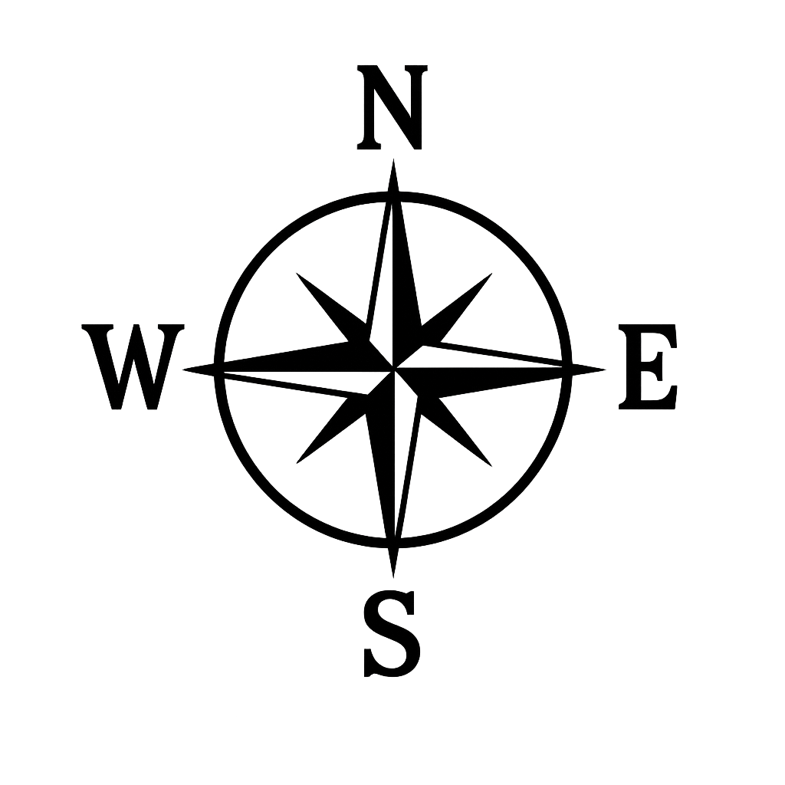

Show Island List
1: Tutorial_Island_V35
2: MS4_Island_With_Puzzles
3: Verdent_Valley
4: Portamis
5: Craco
6: Friendly_Fire
7: Ravara
8: Sanctum_of_the_Ancients
9: Shattered_Peak
10: Thieves_and_Retribution
11: Time_Devours_All
12: The_Valve_District
13: The_Grand_Inventors_Mansion
14: The_Spine
15: At_Journeys_End
16: Atlas_Isles
17: Atlas_Palace
18: Netherworld
19: Crystalline_Mausoleum
20: Data_Research_Facility
21: Geode_Factory
22: Hanging_Village_of_Ranva
23: Harbored_Saborian_Citadel
24: Hermit_Hideaway
25: Lode_Vein
26: Mountain_Valley
27: Natures_respite
28: Saborian_Central_Park
29: Saborian_Training_Ground
30: Serene_Cove
31: Tall_Trees_Directors_Cut
32: Temple_Core
33: Temple_Down
34: THE_WELL
35: Toppled
36: Traitors_Enclave
37: Aquaduct_Island
38: Atlas_Spire
39: Cargo_Ship_B
40: Dryftwood_River
41: New_Redusa
42: Relay_Station_D
43: Sabor_research_facility_87
44: Shattered
45: Stitches
46: Sundered_Moon
47: Research_Facility_Theta
48: Wandering_Mountain
49: Mining_Settlement_of_Markil_v1
50: INTERLINKED_04
51: Lighthouse_Arabeth
52: Doshi_export_test
53: Resting_Titan
54: Rupture